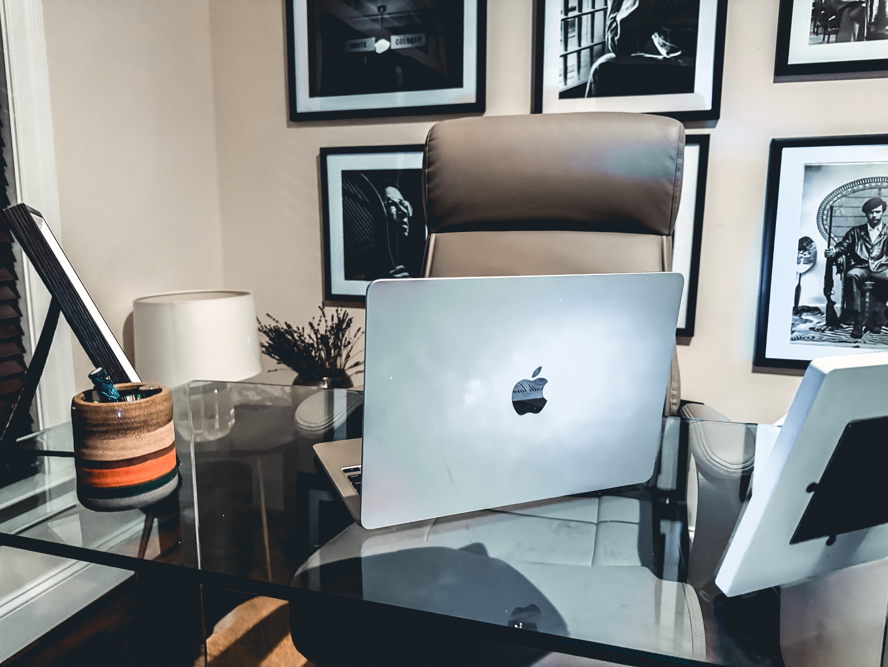

RETURNING TO THE OPEN JOURNAL
I stopped blogging a few years ago.
Not because I stopped writing. I do not think I have ever truly stopped writing. But the climate of where we share changed. Long-form blogging started to feel like a room people had stopped visiting, so I began posting smaller, snack-sized reflections as Instagram captions. Little pieces of my heart. Little windows into what I was learning. Little scraps from a much larger journal.
But before that, my blog had been my open journal since 2010.
Then 2020 happened.
My blog was hacked in the same year I was battling my way back from a severe ulcerative colitis flare. My body was weak. My site was broken. My life felt like it was asking me to look carefully at every place that needed rebuilding. It felt as though God was saying, "Pay attention to the weak spots. This is where the restoration begins."
So I started rebuilding.
I researched, prayed, wrote, learned, questioned, cried, rested, listened, and gathered what was helping me. I worked tirelessly to heal and to understand what my body, my spirit, and my life were trying to teach me. Eventually, those lessons became my testimony, and I poured them into Return to Nature.
I finished that book in 2022.
But the deeper work did not end when the book did. In many ways, the book helped me see myself more clearly. I learned so much about my body, my intuition, my nervous system, my anxiety, my creativity, my faith, and the way God had been speaking to me through more than one language.
Art became one of those languages.
The more I created, the more I learned how to listen. My intuition became clearer. I began noticing the small shifts before the larger changes arrived. I learned what to look for. I learned how my body felt when something was aligned. I learned the difference between anxiety screaming for control and intuition speaking with quiet certainty.
That changed everything.
When I stopped leading with a mind weighed down by anxiety and fear, I was able to live with a much clearer lens. I was able to love more freely, create more honestly, and move through my world with more trust. In the past, I would have been guarded and apprehensive, questioning every good thing until fear had a chance to ruin the blessing before I could receive it. But healing gave me a different way to live. It taught me how to recognize the difference between fear pulling me backward and God leading me forward.
Sometimes we run toward what does not challenge us because it is the road we already know.
Even when it is depleting, shallow, unfulfilling.
But when we are led by intuition over fear, we begin choosing what speaks to our spirit, even when logic has a list of objections. We take chances we once would have talked ourselves out of. We stop catering to wounds we did not create but somehow became loyal to. We begin asking better questions.
What am I obeying?
Fear or faith?
Anxiety or intuition?
An old wound or God's direction?
I explained this to someone recently: we can repeatedly make decisions based on a wound we may not have caused, but unless we do the active work of self-reflection, we will keep making choices that stunt our growth and call it personality, preference, logic, or protection.
I had always considered myself an introspective person, but sickness took me deeper.
Severe illness stripped away the luxury of pretending I had already looked closely enough. It made me sit with myself in a way I could not avoid. It made me examine what I feared, what I carried, what I believed, what I avoided, and how often I had chosen anxiety over intuition.
Eventually, I had to say, "Enough."
Enough missing what God was doing because I was too busy bracing for what could go wrong.
Now, so often, I look around at my life and feel overwhelmed by gratitude. The laughter filling our home. The adventures. The quiet moments of togetherness. The family gatherings. The ordinary magic. The answered prayers that do not always arrive loudly, but sit beside you in the room until you finally recognize them.
There is so much beauty here.

And it was through introspection and spirited solitude that I reached one of my clearest revelations:
God wants me to focus my attention on what is life-giving so I can see all the ways He is blessing me.
Because I have a lot to be grateful for.
My eyes are fixed upon Him. My heart is filled with gratitude. My life is filled with love, magic, and adventure.
And I am so grateful.